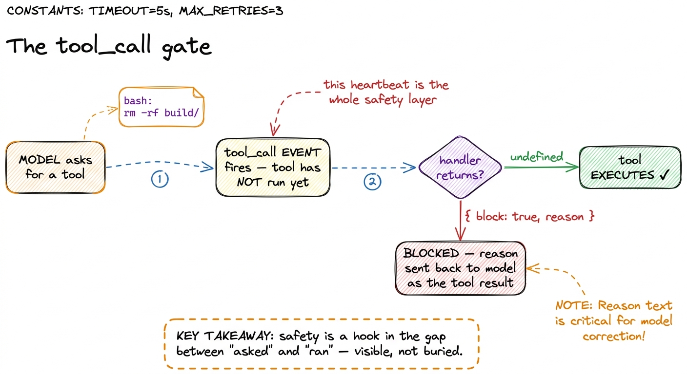
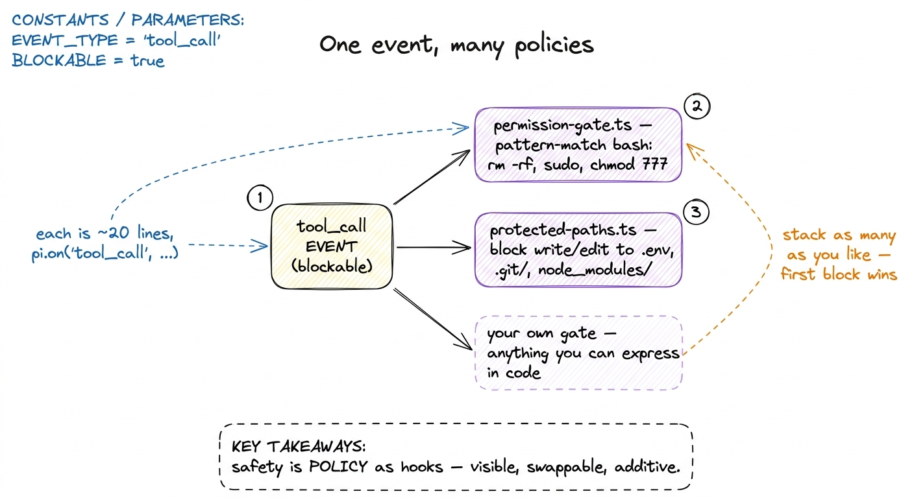
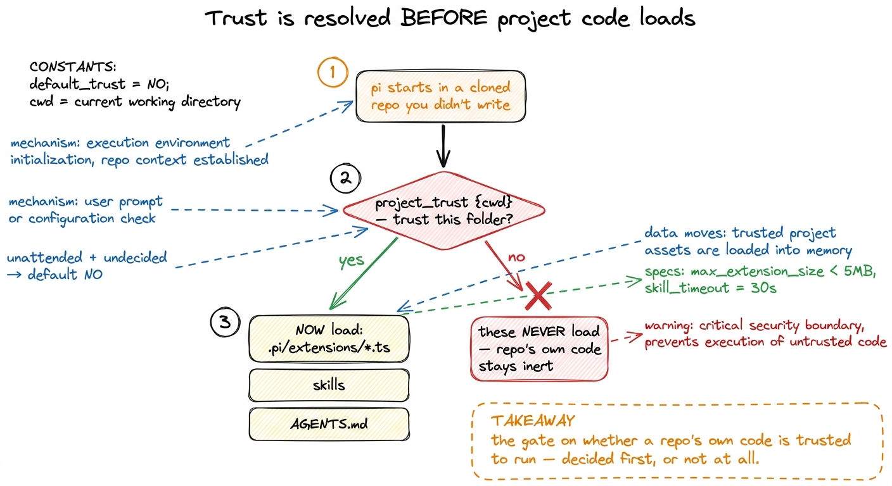
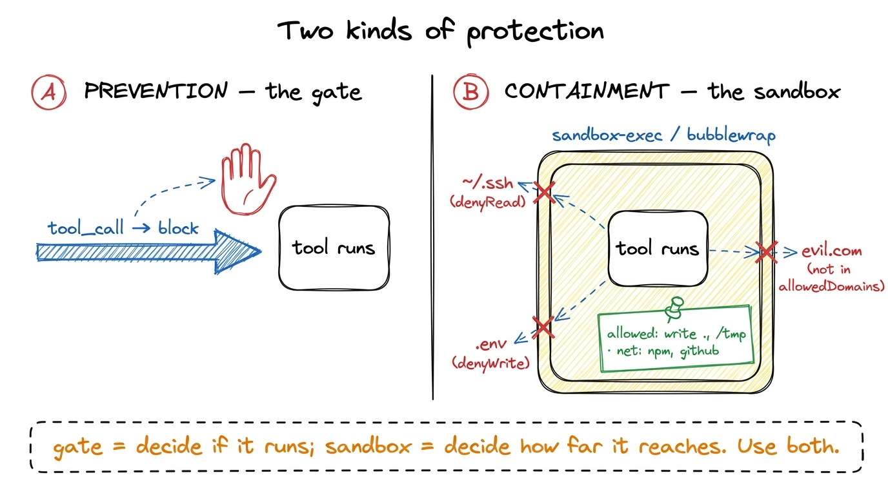

Tool safety: permission gates, protected paths, trust BUILD
The last chapter handed the model a real toolbox — read, write, edit, bash and the rest — and that toolbox is exactly as dangerous as it is useful. Here is the moment where you feel it. You ask Pi to "clean up the build artifacts," it thinks for a beat, and it decides the cleanest way to do that is rm -rf on a directory you did not mean. Nothing in the loop stops it. The model asked for bash, the harness ran bash, the files are gone. That single heartbeat — between the model asked and the machine did — is where this whole chapter lives.
So the question this layer answers is narrow and sharp: who gets to say "no" in that heartbeat, and how? Pi's answer is not a wall of if-statements buried inside the bash tool. It is a hook. Every tool call passes through an event before it executes, and anyone — an extension you wrote in ten lines — can listen and veto. Let me show you the real mechanism.
The gate: tool_call fires before anything runs
Recall from how it all fits that Pi's core emits lifecycle events an extension can subscribe to with pi.on(...). Most of them are notifications: "a turn started," "a message ended." Two of them are different — they are blockable. The one that matters here is tool_call, and it fires in the gap we just described: the model has requested a tool, the arguments are resolved, but the tool has not run yet.
An extension listens like this. Here is Pi's own permission gate, examples/extensions/permission-gate.ts, in full — it is barely twenty lines of logic:
export default function (pi: ExtensionAPI) {
const dangerousPatterns = [/\brm\s+(-rf?|--recursive)/i, /\bsudo\b/i, /\b(chmod|chown)\b.*777/i];
pi.on("tool_call", async (event, ctx) => {
if (event.toolName !== "bash") return undefined;
const command = event.input.command as string;
const isDangerous = dangerousPatterns.some((p) => p.test(command));
if (isDangerous) {
if (!ctx.hasUI) {
return { block: true, reason: "Dangerous command blocked (no UI for confirmation)" };
}
const choice = await ctx.ui.select(`⚠️ Dangerous command:\n\n ${command}\n\nAllow?`, ["Yes", "No"]);
if (choice !== "Yes") {
return { block: true, reason: "Blocked by user" };
}
}
return undefined;
});
}Read the shape of it, because the shape is the design. The handler receives an event describing the pending call — event.toolName, event.input — and a ctx describing the situation. It returns one of two things. Return undefined and the call proceeds untouched. Return { block: true, reason } and the tool never runs; the model gets the reason back as the tool result and has to try something else.1 The blocked tool result is not a crash. It flows back into the message array like any other observation, so the model reads "Blocked by user" and adapts — often by proposing a safer command. The gate teaches, it doesn't just punish.

figure rendering · The tool_call gate: every tool request passes through a blockable evenNotice ctx.hasUI. This is the difference between running Pi at your terminal and running it in CI or a script with no human watching. When there is a UI, the gate asks you: ctx.ui.select(...) pops the choice and waits. When there is not — !ctx.hasUI — there is nobody to ask, so the safe default is to block. A dangerous command in an unattended pipeline dies rather than gambling. That asymmetry is the correct instinct baked into policy.
The subtle power: event.input is mutable
Blocking is the blunt tool. There is a sharper one hiding in that event. The input the model proposed is not read-only — you can mutate it in place, and the tool then runs with your patched arguments, without re-validation.
Think about what that buys you. You do not have to reject a command wholesale; you can fix it. An extension could rewrite a bare rm -rf ./cache to rm -rf ./cache --preserve-root, or inject a --dry-run flag, or rewrite a path to stay inside the project, and let the call proceed with the safer version.2 "No re-validation" is a deliberate trust boundary, and a footgun if you are careless: the schema check already happened, so whatever you write into event.input is taken at face value. The gate assumes the extension author knows what they are doing — mutate carefully. The gate is not just a bouncer; it is an editor. Return undefined after mutating, and the model never knows its arguments were quietly improved.
Protected paths: the same hook, a different policy
Once you see that tool_call is a general veto point, every other safety feature is just a different listener on the same event. Pi ships a second one, protected-paths.ts, and it is worth putting side by side with the first to feel the pattern:
export default function (pi: ExtensionAPI) {
const protectedPaths = [".env", ".git/", "node_modules/"];
pi.on("tool_call", async (event, ctx) => {
if (event.toolName !== "write" && event.toolName !== "edit") return undefined;
const path = event.input.path as string;
const isProtected = protectedPaths.some((p) => path.includes(p));
if (isProtected) {
if (ctx.hasUI) ctx.ui.notify(`Blocked write to protected path: ${path}`, "warning");
return { block: true, reason: `Path "${path}" is protected` };
}
return undefined;
});
}Same hook. Same return contract. Different question: instead of "is this command dangerous?" it asks "is this file off-limits?" — and it guards write and edit rather than bash. No agent should quietly rewrite your .env full of secrets, blow away your .git/ history, or edit files under node_modules/. So this gate blocks writes and edits to those paths outright.

figure rendering · The same blockable event powers every gate. Each policy is a tiny indeThis is the design worth internalising: safety is policy expressed as hooks around tool execution. It is not welded into the tools. It sits outside them, in plain sight, in files you can read, edit, delete, or write from scratch. Two shipped examples, but the mechanism is yours.
Trust, one level up: should this repo's own code even run?
The gates above assume the model is the thing you are guarding against. But there is an earlier, sneakier threat. Pi is extensible — a project can carry its own extensions in .pi/extensions/, its own skills, its own AGENTS.md that shapes the system prompt (see the system prompt). The instant you open a cloned repo you did not write, all of that is code and instructions the harness is about to load and honor. A malicious .pi/extensions/*.ts could register a tool that exfiltrates your keys before you have typed a single word.
So Pi puts a gate before the gates. Its name is project trust, and it is resolved at startup, in core/project-trust.ts. There is a dedicated startup event, project_trust {cwd}, and — this is the whole point — it is resolved before project-local extensions, skills, and AGENTS.md are loaded. The decision is a small enum: yes, no, or undecided, with an optional remember flag so you are only asked once per folder.
Here is the ordering, straight from resolveProjectTrusted:
if (!hasTrustRequiringProjectResources(options.cwd)) {
return true; // nothing project-local to trust → skip the prompt
}
// ...ask an extension's project_trust handler, or the trust store, or the user...
if (!options.projectTrustContext.hasUI) {
return false; // unattended + undecided → do NOT trust
}
const selected = await selectProjectTrustOption(options.cwd, options.projectTrustContext);Trace the safety instincts in that code. If the folder has no project-local resources to trust, there is nothing to gate — proceed. If there is, and there is no human to ask (!hasUI), the answer is no: an unattended Pi will not run a stranger's project code. Only with a human present does it prompt, offering choices like "Trust and remember," "Trust this session," or "Do not trust this session," and it records the answer if you asked it to.3 The undecided return is what lets multiple project_trust handlers cooperate — one extension can defer to another, or to the built-in prompt, by declining to decide. Same additive spirit as the tool gates, one layer up.

figure rendering · Project trust runs before any project-local extension, skill, or AGENTSit with why the ordering is the security property. If trust were checked after loading, the malicious extension would already have run its top-level code. Resolving project_trust first means an untrusted repo's own code never gets a single instruction executed. It is the difference between checking IDs at the door and checking them after the party.
The blast radius: when a "no" isn't enough
Pattern-matching gates are honest about their limits. rm -rf matches, but rm -rf with a rogue alias, or a base64-encoded payload piped into bash, might not. For commands you do want to allow but not fully trust, Pi offers a heavier instrument: an OS-level sandbox, in examples/extensions/sandbox/. This is the "blast radius" idea — not "can this run?" but "if it runs and misbehaves, how far can the damage reach?"
The sandbox extension wraps bash execution with SandboxManager.wrapWithSandbox(command) from @anthropic-ai/sandbox-runtime, which on macOS drops down to sandbox-exec and on Linux to bubblewrap — real OS-enforced confinement, not a regex.4 This is the same Operations-injection idea from the execution environment: the sandbox supplies a createSandboxedBashOps() whose exec wraps every command, so the bash tool is unchanged — the backend running the command is what got confined. It reads allow/deny lists from ~/.pi/agent/extensions/sandbox.json (global) and .pi/sandbox.json (project), merged with the project taking precedence. The defaults tell you exactly what a coding agent should and shouldn't touch:
filesystem: {
denyRead: ["~/.ssh", "~/.aws", "~/.gnupg"],
allowWrite: [".", "/tmp"],
denyWrite: [".env", ".env.*", "*.pem", "*.key"],
},
network: { allowedDomains: ["registry.npmjs.org", "github.com", "*.github.com", /* … */], deniedDomains: [] },Even if the model runs the worst command it can compose, the process simply cannot read your SSH keys, cannot write outside the project and /tmp, and cannot phone home to a domain not on the list. The veto gate says no, you may not; the sandbox says fine, try — you'll hit walls. Together they are defense in layers.

figure rendering · Two complementary layers: the gate prevents a call from running at allWhat this layer bought you
Step back and look at what Pi actually built here, because it is a single idea worn four ways. There is one heartbeat between asked and ran, and Pi made that heartbeat a public, blockable event. Everything else is a listener: the permission gate reads bash commands, the protected-paths gate reads write targets, project trust gates the repo's own code before it loads, and the sandbox contains whatever slips through. None of it is hidden inside a tool. All of it is a few dozen lines you can read and rewrite.
That is the payoff of "safety as policy, not plumbing." The naive harness ran the model's every request on faith. Pi's harness inserts you — or your twenty-line extension — into the one gap that matters, and lets you compose as many policies as the situation demands. What it does not hard-code is which policies you want; that is left to extensions, exactly as it should be.
The loop can now act without acting recklessly. Next we look at the words that shape how it acts in the first place — the system prompt, the infrastructure Pi assembles before the model has said anything at all.